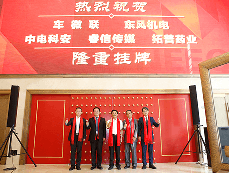
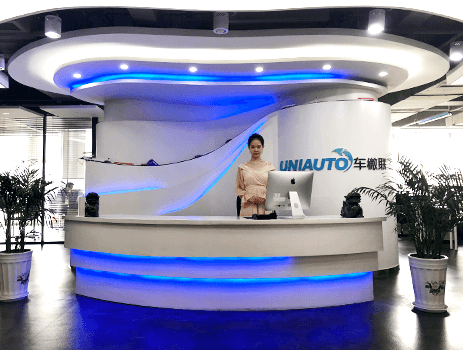
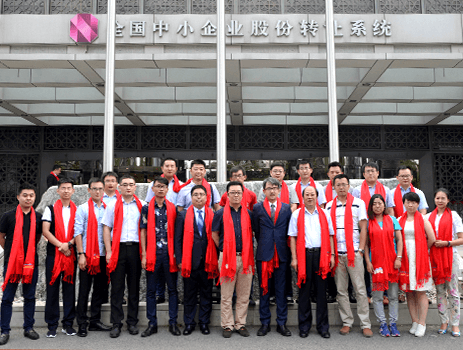

关于我们
公司简介
发展历程
山东车微联信息技术股份有限公司(简称“车微联”)成立于2012年3月29日，2016年7月15日正式挂牌“新三板”，股票代码“837915”，是中国质量万里行促进会常务理事单位、中国品牌建设促进会理事单位。
车微联拥有《CMMI软件能力成熟度模型3级认证》、《 武器装备质量管理体系GJB9001B及装备承制单位资格》、《IS09001质量管理体系》、《 IS027001信息安全管理体系认证》等资质，具备军品业务研发和供应的能力和资质，获得发明专利3项，软件著作权42项。
车微联拥有专兼职团队100多人，其中70%为技术研发人员，与中国科学院大学、北京理工大学、中国人民大学进行产学研合作，拥有强大的技术研发能力以及成熟先进的信息安全技术和大数据挖掘技术，长期专注于军队、政府、企业信息安全和大数据技术研究与应用，技术和服务得到军队、政府、银行、保险以及电信运营商等客户的认可。



Copyright © 山东车微联信息技术股份有限公司
鲁ICP备12025220号-5
鲁公网安备 37010202001223号